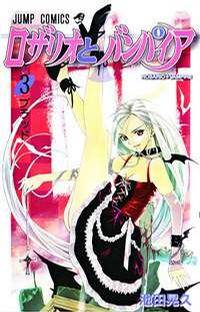

-
Alternative Names: Rosario + Vampire
Author(s): Ikedo Akihisa
Genres: Action, Comedy, Ecchi, Fantasy, Harem, Romance, School Life, Shounen, Supernatural
Release: 2004
Status: Complete
Type: Manga
Length: 10 Volumes 40 Chapters
Read Online @:

More Info @:

Notes
When Tsukune gets to his knew school he finds it very peculiar... very different from his last school... wait was that a werewold?!? This school is a youkai academy which is attended by monsters, or youkai. Tsukune tries to run away and on his way he meets a beautiful girl called Moka and he gets super happy ^^ However she just happens to turn into a vampire when her rosary gets taken off... dang it! Will Tsukune survive in his new school where humans are not supposed to be? Will he find friends to protect him?